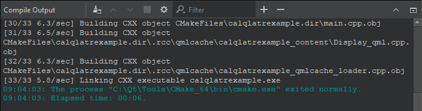
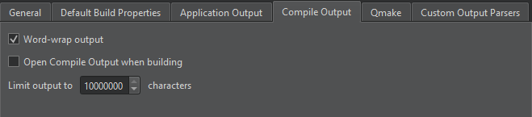
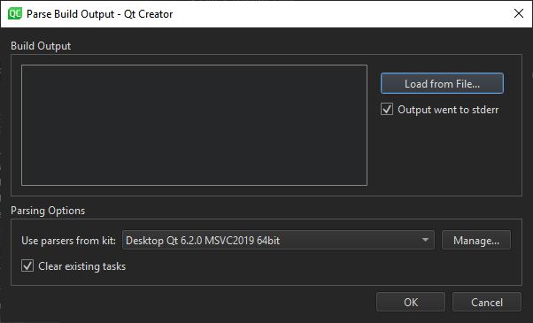

Compile Output
Compile Output shows a more detailed version of information displayed in Issues.

Double-click a file name in an error message to open the file in the code editor.
To cancel the build, select the Cancel Build button.
To copy the output to the clipboard, select Select All in the context menu, and then select Copy. Save the output as a file if you want to examine it later without having to build the project again. This is useful for large projects that take a long time to build.
Compile Output Preferences
To specify whether to open the Compile Output view on output when building applications:
- Open the preferences:
- In the Compile Output view, select
 (Open Settings Page).
(Open Settings Page). - Select Preferences > Build & Run > Compile Output.

- In the Compile Output view, select
- Select the Open Compile Output when building check box.
- In the Limit output to field, you can specify the maximum amount of build output lines to display.
Parsing Existing Compile Output
You can use Qt Design Studio's output parsers to parse output from builds done outside of Qt Design Studio or stored from previous build runs. By default, the parsers from the kit selected for the active project are used, but you can select another kit.
To parse compile output:
- Select Tools > Parse Build Output.

- Paste the build output in the Build Output field, or select Load from File to load it from a file.
- Deselect the Output went to stderr check box if the parser expects issues on
stdout. - In the Use parsers from kit field, select the kit to use for parsing the output. Select Manage to view and modify kit settings.
- The parser displays the parsed output in Issues. By default, the view is cleared before adding the new output. Deselect the Clear existing tasks check box to append the new output to the old output.
- Select OK to start parsing.
See also View output.